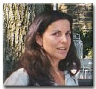
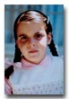

|
 |
|
Alexandra Holly HendersonAlexandra Holly Henderson was born on November 5, 1963, in Pompano Beach, Florida. |
|
| Important Facts | |
| November 5, 1963 | Holly was born in Pompano Beach, Florida. She is the daughter of Alexander D. Henderson III and Patricia Ford. Holly is an artist living in San Francisco with her husband and two daughters. |
 |
| 1969 | Holly's mother and siblings moved to Carmel Valley, California. | |
| 1981 | Holly graduated from Menlo-Atherton High School in Menlo, California. | |
| 1987 | Holly graduated from the San Francisco Art Institute in San Francisco, California. | |
| November 22, 1992 | Holly was married at the Playa Hotel in Carmel-by-the-Sea. She and her husband Bijan Fouladi have two adult children. | |
| 1982 | Holly founded Fouladi Projects, which had a gallery on Market Street in San Francisco for many years. |

Last Updated: August 23, 2026